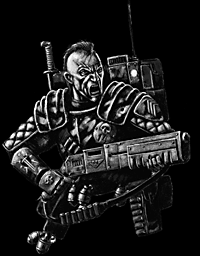
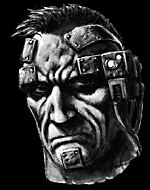
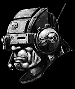

Imperial Forces |
Force Disposition Introduction |
Ork Forces |
|
 Currently held in reserve after travelling almost thirty light years across the warp, the Elysian Drop Troops have been extensively briefed on the situation in Armageddon Prime. It is suspected that Ghazghkull intends to send Varga's Drop Legion into the tempestuous fighting around Death Mire, and as such the Elysian's drop ships are on full alert in orbit above the hive. Led by Colonel Prinz himself, the Elysians are impatient for combat and many officers favour a boarding action on the hulk Ogron, however General Kurov recognises the utility of a rapid response force and is keeping the squadrons for when and where Armageddon needs them most. The Elysians come from a verdant world some thirty light years from Armageddon, towards the galactic hub. The Elysia system and surrounding wilderness space is notorious for its pirates, as a main trade route through the sector passes through Elysia, and the system's many swirling gas clouds and hundreds of asteroid fields provide perfect ambush sites. Through combating this ever-present threat, the Elysians are therefore well trained in ship-to-ship boarding actions, and fighting in concert with orbital support when attacking isolated pirate bases. |
| ||||||||||||||||||||||||||||||||||||||||||||||||||
|
The preferred operation style of the Elysian Drop Troops is amply demonstrated in accounts of the Skopios Incident. Skopios was a large asteroid in inter-system space roughly a week's warp travel from Elysia. It was populated by the Adeptus Mechanicus who used the otherwise lifeless rock as a facility for dangerous experimentation and analysis of potentially hazardous discoveries. It was therefore natural that when, in 873.M38, the Explorator vessel Incalculus Stellar came across an alien edifice floating in wilderness space not far from Skopios, they would take it to the asteroid facility.
Astropaths in surrounding sectors began to report all manner of ill omens in their messages - dreams and visions were blood-red and filled with screaming faces. A routine patrol by the Imperial Navy reported no contact with Skopios and the 22nd Elysian Regiment was sent to investigate. Colonel Prinz of the 22nd treated the whole of Skopios as potentially hostile, and deployed several Recce Companies to act as scouting parties, alongside Imperial Navy Ground Observation Officers.

The Recce teams at first reported Skopios deserted, although the machinery seemed to be working at full volume. As the Elysians proceeded, there came sporadic reports of fighting, but Prinz could get no details - each landing party that signalled engagement with the enemy soon fell silent. Scattered comms-chatter identified the enemy as humanoid, extremely fast and powerful. Prinz first suspected the Eldar, and he ordered the rest of his regiment onto full drop alert, ready to respond at a moment’s notice.
The two surviving companies made steady progress across Skopios, working their way towards the main factory complexes at its northern pole. It was Captain Schultz of the 3rd Recce Company who first called in an amazing discovery. The production lines had been completely altered, transformed into something completely unrecognisable to the Naval Techpriests accompanying the Guardsmen. They were producing what at first seemed to be statues of skeletal humans, but on closer inspection the Techpriests concluded that the factories were making artificial warriors! It seemed none of them were active yet, but it was only a matter of time before there would be thousands of the warriors ready. Prinz ordered the Recce Companies to locate the control centre and shut down the whole facility, and they were to call for help the moment they ran into trouble.
That trouble lay in wait for them at the control complex. Just as the first reports of renewed combat came up from Skopios' surface, the fleet Astropaths warned Colonel Prinz that they had detected something incredibly ancient and utterly evil on the asteroid below. They were half-insane with terror at what they had found, and it was impossible to get any clear information from them. The Elysian Colonel ordered a full launch onto the control centre. The Guardsmen had simple orders - destroy anything they found.
As the dropships screamed down through Skopios' thin atmosphere the sky burned with the retro-thrusters of the Elysian landers. Prinz himself was one of the first into the complex and was horrified to find nothing of the Recce Companies. It was a short while later that he found the alien edifice, sarcophagus-like and exuding a menace which even he could detect. As Prinz and his command company watched, the coffin-shaped monolith began to glow and as the light become almost blinding a silhouette appeared inside.

The creature that stepped from the gateway, for that is what the object appeared to be, was tall and lithe, almost skeletal. It appeared unarmed, but as Prinz ordered his men to open fire, the alien exploded into life, leaping into the Guardsmen so fast it was merely a blur of darkness. The screams of the dying and wounded echoed off the metal walls of the command centre as the ancient monstrosity carved its way through squad after squad of men, ripping them apart with its hands, seemingly impervious to their weapons. It was then that the metal warriors from the factory burst into the command centre, blasts of energy from their guns disintegrating everything in their path.
The firefight became intense - alien machines were blown apart by fusillades of heavy bolter fire, lascannon beams criss-crossed the chambers of the command complex, plasma bolts burnt through walls while beams of bright energy made men evaporate into nothing. The Elysians were taking heavy casualties and Prinz ordered the survivors to retreat back to the landers and take off for orbit. As they retreated, the fleet set up a bombardment to cover the Drop Troops' withdrawal, the shells and missiles from the ships plummeting onto Skopios barely fifty yards from the Elysians. As the last Drop Troops left Skopios, the fleet pounded the facility with torpedoes and broadsides until the asteroid was shattered. The bombardment continued, smashing the fragments of Skopios into smaller and smaller pieces.
Even then, no-one was sure if the sarcophagus had been destroyed. For the last three hundred years a wide area centred on the remains of Skopios has been declared Purgatus, and Imperial Navy patrols ensure the quarantine is not breached. Prinz and the 22nd Elysian were exonerated of all responsibility and later went on to garner great fame and respect in the Cathalin Crusade, during which the Colonel was eventually promoted to Warmaster.
| |||||||||||||||||||||||||||||||||||||||||||||||||||